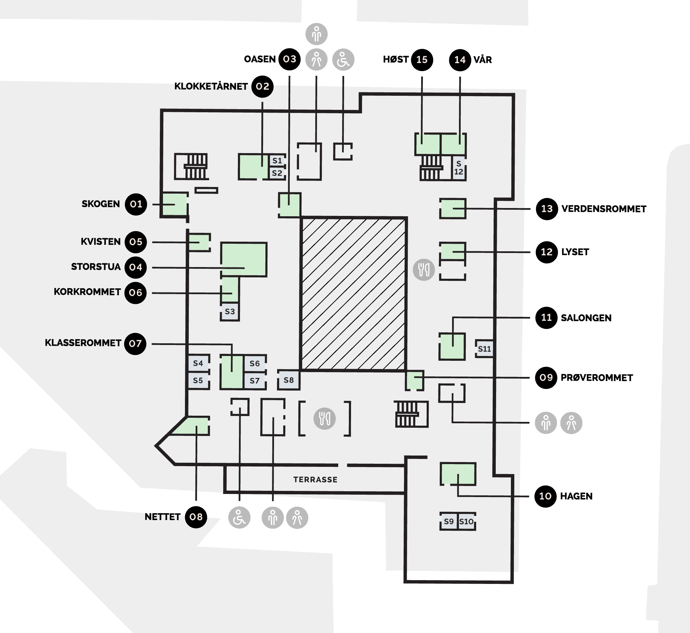

BrowseIt
Feil bokstaver
Hvem er dette?
Poengsum:

Utvikling
| projects.knowit.no | Atlassian Confluence (wiki) |
| support.knowit.no | Atlassian JIRA (tickets) |
| kode.knowit.no | Atlassian Bitbucket (repos) |
| byggmester.knowit.no | Atlassian Bamboo (build server) |
| crowd.knowit.no | Atlassian Crowd (user groups) |
| nexus.knowit.no | Nexus for NPM & Maven |
| github.com/knowit | Knowit's public GitHub repos |
Administrasjon
| Epost | epost.knowit.no |
| Kalender | kalender.knowit.no |
| Passord | knowit.1password.eu |
| Intern Slack | knowitobjectnet.slack.com |
| Felles Slack | knowit.slack.com |
| UBW timeføring | timer.knowit.no |
| UBW utlegg | knowit.unit4cloud.no |
| Plusstidvalg | plusstidvalg.knowit.no (Google Forms) |
| CV Partner | knowit.cvpartner.com |
| Møterom i sanntid | sundtcommander.knowit.no/… (lokalt nett) |
| PersonFinder | personfinder.knowit.no (lokalt nett) |
| Sharepoint | knowit.sharepoint.com |
| HelpIt | helpit.knowit.se |
| Seminarer | konferanse.knowit.no |
| Epostlister | groups.google.com/a/knowit.no/... |
| Firmahytter | prodess.no |
Navnespillet
Bli kjent med dine kolleager. Prøv navnespillet!
Nooblisten _
Good news everyone! You have completed all the tasks. A+. Well done!
Nå gjenstår bare to små ting:

Nå gjenstår bare to små ting:
- Si ifra til Christer Kjellesvig eller Michael Johansen at du har kommet hit 🎁
- Om du vil, send feedback om BrowseIt til michael.johansen@knowit.no om hva som kunne vært bedre til neste år
- Nooblisten er ikke i rekkefølge, bare logisk gruppert.
- 0 minutter/bootcamp betyr "gjøres for deg".
- Ikke alt er relevant for sommerjobbere.
- Denne listen er kun for din egen del.
- Lagring skjer i localStorage.
- Om du jobber med design eller noe annet som ikke er utvikling, så er det mye du kan hoppe over. Lucky you.
Personal
Vet hvem mine ledere er (prosjektleder && gruppeleder && avdelingsleder), og forskjellen på dem
Har lest, forstått og signert ansettelseskontrakten (tar fort en time)
Har lest, forstått og signert taushetserklæringen som var vedlagt ansettelseskontrakten
Om prosjektet har egen taushetserklæring så har jeg signert den (noen få prosjekter har dette), else void
Har lest høvelig gjennom personalhåndboka (tar fort en time)
Har snakket med gruppeleder om hvilke teknologier/prosjekter jeg ønsker å jobbe med
Vet at jeg har tilgang til alle gruppeledere og avdelingsledere, selv om ikke alle er akkurat mine ledere
Vet om varslingstjenesten som kan brukes til å melde fra om uakseptabel atferd (f.eks. trakassering / rasisme)
Har hatt min første utviklingssamtale med gruppeleder
Har fått forklart hvordan feriedager funker i mitt første arbeidsår
Kommunikasjon
Har vært på hilserunde med gruppeleder og sagt hei til de fleste
Har fått bruker på Google Apps (single sign-on for mange tjenester!)
Har åpnet eposten og kalenderen, og vet at eposten må sjekkes daglig
Har kommet meg på Slack, og lagt til kanalene jeg vil ha
Har meldt meg på epostlistene som jeg ønsker å være på
Vet hvordan jeg arkiverer epost i Google Apps, jeg vet hvorfor arkivering er bedre enn sletting
Har lagt til felleskalenderen
Har lagt til feriekalenderen, og lover å legge inn feriedagene mine
Har lagt til fagkalenderen, og skal bli med på fagarrangementer
Har lagt til eventkalenderen, og skal bli med på fest
Har lagt til møteromskalenderne, og vet hvordan jeg skrur dem av når jeg ikke trenger dem
Abonnerer på daglige oppdateringer fra Confluence for å få oversikt over Knowit (fint som ny, skru av etterhvert)
Lokaler
Har fått adgangskort, lært koden og tatt av kodelappen
Har fått en kontorstol jeg liker, og et heve/senk bord
Vet at lunsj dekkes med 50,- i Sundt-kantinen hver dag, selv etter rabatter, og at dispenserdrikke er gratis for oss
Vet at lunsj dekkes med 60,- for utekonsulenter hver dag
Har vært på lageret vårt, og vet hva jeg kan finne der
Vet at pakker skal adresseres Heimdalsgata 15, 0561 Oslo, og hentes i resepsjonen i 1. etasje
Vet hvor jeg finner dusjene, skapene, og rekvisita
Vet hvor nærmeste nødutgang er, og at Heimdalsgata er stedet å møte opp når brannalarmen går
Jeg vet at det er tre resirkuleringsstasjoner for papp, plast og pant, to i 5. etasje, og en i 4. etasje
Jeg vet at det er to avfallsbeholdere på hvert kjøkken, med grønn pose til matavfall og hvit pose til søppel
Jeg vet at jeg selv må kaste pappesker og stort avfall i søppelrommet i 1. etasje (inn gangen bak heisene)
Har utforsket Entra sin app (finnes også på iOS/Android) og sett hva slags tjenester de tilbyr oss (t.o.m. renseri)
Vet at det er gratis å booke auditorium/møterom i 1. etasje via Entra sin møteromsbooking
Vet at det også er mulig, men ikke gratis, å booke møtemat via Entra sin møteromsbooking
Har tatt det obligatoriske brannkurset for Sundtkvartalet, finn link og kurskode på mottak av nyansatte-siden
Vet at forslag kan sendes til sundt@knowit.no med subject Ønske/Idé/Feil/Spørsmål
Profilbilder
Har fått bildet mitt tatt via vår interne fotograf, det skal brukes overalt i farger
Vet hvor jeg finner profilbilder for hele Knowit Norge
Har fått profilbildet på adgangskortet
Lagt inn profilbildet på CV Partner
Lagt inn profilbildet på Confluence
Lagt inn profilbildet på JIRA
Lagt inn profilbildet på Bitbucket
Lagt inn profilbildet på Slack
Lagt inn profilbildet på G Suite
Lagt inn profilbildet på Ansatte-siden (deretter velg bildet og bruk 100px bredde)
Økonomi
Har fått infoskriv for nyansatte fra økonomisjefen
Har fått nytt telefonabonnement og SIM-kort som betales av jobben (sweet!)
Vet at familie kan få et telefonabonnement med mye data til lav pris via jobben
Har ordnet meg Ruter# ansattbillett om ønsket (vanlig årspris, men kan avsluttes som månedskort)
Har lest høvelig over forsikringspolisene
Har lastet ned og lagt inn forsikringsinfo i Gouda-appen
Har sett over listen over bedriftskonti og bedriftsavtalene nederst på siden («Gratis FastTrack? Ooh, nice.»)
Har brukt utleggregningssystemet for første gang (merk: ikke single sign-on, har eget passord)
Vet hvor jeg finner info om timeføring og utleggregningssystemet
Vet at overtidsmat skal ha kvittering og føres i UBW (PS: noter hvem du spiste med i UBW)
Vet at overtidsmat føres på "no project - no workorder" i UBW (altså på selskapet, ikke kunde)
Har lest lønnskapittelet i personalhåndboken ekstra godt, og vet at lønnsjusteringer skjer årlig i januar
Har begynt å spare penger og skal ha minst 3 månedslønner stående som buffer fordi jeg er en ansvarlig voksen
Vet at jeg får lønn den 20. i hver måned, bortsett fra i desember som er den 10. (samt halv skatt, som er sweet)
Har satt meg inn i hvordan pensjonsavtalen min fungerer, og har aktivt valgt en spare/investere-balanse
Har sjekket om jeg kan bli blodgiver, slik at jeg kan heve lønn samtidig som jeg redder noens liv og får en Mummi-kopp (se Personalhåndbok, kap. 7.3.2).
Timeføring
Har lært at Objectnet sine timekoder starter på 320 (Experience sine starter med 312)
Har satt ny startside til å være "Din ansettelse" → "Timelister" under "Din Profil" i UBW
Vet at jeg ikke må endre primær epost under "Din Profil" i UBW, for da mister jeg tilgang (ja, sykt teit)
Har funnet ut av hvorvidt jeg skal føre 0.5 timer for lunsj eller ikke (kundeavhengig)
Har forstått at jeg må forhåndslevere timelister for ferieuker slik at regnskap ikke lider
Har lært at det er enklere å scanne kvitteringer i browser på mobil (knowit.unit4cloud.no) enn i Unit4-appen
Vet at mange typiskse timeføringsspørsmål står i UBW FAQen vår
Vet at jeg kan endre om plusstimer utbetales eller ikke på plusstidvalg.knowit.no
Fag
Vet hvem fagsjefen er, og har hilst på vedkommende
Jeg leser Hacker News daglig
Har sett på listen over aktive faggrupper / fagområder på wikien
Har meldt meg inn i, eller startet, en faggruppe / et fagområde (ledere får mer fagtimer)
Har brukt mine første 8 fagtimer
Har lest om belønningsmodellen for foredrag
Har meldt meg på mitt første fagseminar
Har meldt meg på min første konferanse (tar fort en time)
Sosialt
Om ønsket har jeg blitt med i en av gruppene i bedriftsidrettslaget, else void
Om jeg kan spille et instrument så har jeg pratet med en i BandIt, else void
Har vært med på mitt første internmøte (før én time på "1020: Interne møter")
Har hatt brettspillkveld eller annen teambuilding med teamet mitt
Har vært med på min første prosjektlunsj
Har vært med på min første is på takterrassen med teamet
Salg
Får logget inn i CV Partner, ellers mailer jeg Per Christian Øren
Har laget master-CV i CV Partner på norsk (tar fort en dag)
Har lagt inn meg selv på ansattsiden på wikien
Rekruttering
Om ønsket har jeg meldt interesse for å delta på bedpres/kurs/karrieredager
Jeg vet at det går an å være med å holde tekniske intervjuer når jeg får mer erfaring (minst 1 år)
Har lest om rekrutteringsbonusen vår
Grafisk profil
Har sett Knowit sin Brandbook og vet at jeg skal hente logoer osv. derfra
Har sett Knowit sine presentasjons- og dokumentmaler og vet at jeg skal bruke den for "Knowit Solutions"
Hvis jeg vil så har jeg skaffet visittkort, else void
Dersom jeg ikke kan noe om design så lover jeg å spørre om designhjelp når jeg trenger det
Hardware & software
Avtale innkjøp av splitter ny laptop (3 år syklus)
Fått splitter ny laptop<3
Har registrert AppleCare eller tilsvarende (husk at forbrukerlov ikke gjelder for bedrifter)
Sette opp laptopen slik jeg liker å ha den (tar fort en dag)
Hentet det jeg trenger av kabler, mus/tastatur, laptopstand, overganger, etc.
Fått koblet på WiFi og vet at VPN og møteroms-Chromecasts kun funker på vårt interne WiFi (ikke gjestenettet)
Har satt opp printeren med guiden på wikien
Har en office suite som fungerer for meg (MS Office, iWork, GDocs, OpenOffice, etc.)
Utviklingsverktøy
Har sett meg rundt på Confluence (wikien)
Har sett meg rundt på JIRA (tickets)
Har sett meg rundt på Bitbucket (kodebasene)
Har sett litt på Crowd og Bamboo (brukergrupper, byggserver)
Har fått intro til hvilke verktøy som brukes i prosjektet mitt
Har laget unik og passordbeskyttet SSH-nøkkel, og lagt den inn på Bitbucket
Sikkerhet
Har skrudd på full disk encryption på laptopen (kan være problematisk på noen Linux-distroer)
Bruker et sterkt og unikt passord med single sign-on hos Knowit (Gmail, Slack, Confluence, JIRA, Bitbucket, etc.)
Bruker sterke og helt unike passord på alle private kjernetjenester (Facebook, Gmail, Dropbox, iCloud, etc.)
Har satt 2-faktor på konsernkontoen via Active Directory → Profile → "Additional security verification"
Har tatt i bruk Knowits 1Password, og skal aldri legge inn mine private passord der
Om jeg ikke har fått 1Password automatisk så mailer jeg on-passwords@knowit.no og ber om konto
Om ønsket har jeg lagt til mitt private 1Password-vault i 1Password-appen for å unngå å logge ut/inn hele tiden
Tatt i bruk brannmur, og har kontroll på hvilke tjenester som kjører på min jobbmaskin
Har lagt inn gode backup-løsninger på laptopen (cloud syncing er tilstrekkelig)
Har laget en god begynnelse på en filstruktur og skal holde Knowit-filer ryddige plassert i strukturen
Om prosjektet har egne sikkerhetsretningslinjer så har jeg lest og forstått dem, og skal følge dem, else void
Anstendighet
Jeg lover å aldri sette koppen nedi kummen, for jeg er ikke 12 år lenger
Jeg lover å redusere støynivået mitt når jeg går gjennom kontorlandskapet i arbeidstiden, for jeg er ikke 5 år lenger
Jeg skal unngå å ta med ting fra kantina opp, og dersom jeg gjør det så lover jeg å ta det ned samme dag
Jeg lover å forlate toalettet nøyaktig slik det var når jeg gikk inn - eller bedre (f.eks. kaste et papir som lå på gulvet)
Jeg lover å gjøre mitt for å motvirke planetens død ved å skille avfall i plast, papp/papir, og matavfall. Og dersom jeg lurer på hvordan noe skal kastes så spør jeg noen i stedet for å gjøre den samme feilen i flere tiår fremover
When the going gets tough...
...the tough eat chocolate (på fredager kl 14, sett en alarm på smartklokken din)
Jeg skal committe ofte. Jeg skal committe ofte. Jeg skal committe ofte.
Jeg lover å si ifra når jeg har problemer
Jeg lover å spørre de andre på teamet om alt mulig rart
Jeg lover å lese dokumentasjonen
Jeg forstår at jeg må si nei dersom jeg ikke vil påta meg et nytt prosjekt selv om en leder spør om det
Jeg vet at jeg alltid kan prate med de personalansvarlige (gruppeledere og avdelingsledere) om hva som helst for de har taushetsplikt, og at jeg kan velge fritt hvem av dem jeg vil prate med vanskelige ting om